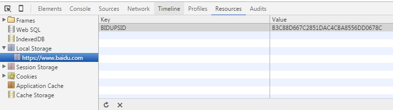

HTML API
localstorage tiene dos API en el navegador: localStorage y sessionStorage, que existen en el objeto window: localStorage corresponde a window.localStorage, y sessionStorage corresponde a window.sessionStorage.
La diferencia principal entre localStorage y sessionStorage radica en su ciclo de vida.
Uso básico

Aquí,
Alcancese refiere a: cómo aislar el localStorage entre diferentes páginas (después de todo, no se puede leer el localStorage de Tencent desde la página de Baidu, jaja).localStorageSolo con el mismo protocolo, el mismo nombre de host y el mismo puerto, se puede leer/modificar la misma copia de los datos de localStorage.sessionStorageCompararlocalStorageSiendo más estrictos, además del protocolo, el nombre de host y el puerto, también se requiere estar en la mismaventana(es decir, pestaña del navegador).
Ciclo de vida
localStorageEn teoría es permanentemente válido, es decir, no desaparece a menos que se limpie activamente. Incluso si los datos guardados superan el tamaño especificado por el navegador, no borrará los datos antiguos, solo mostrará un error. Pero hay que tener en cuenta que, en los navegadores de dispositivos móviles o en losNative AppWebView utilizados,WebViewallí,localStoragelocalStorage no es confiable, y puede ser borrado por varias razones (como salir de la aplicación, cambio de red, memoria insuficiente, etc.).sessionStorageSu ciclo de vida, como su nombre indica, es similar a session,sessionbasta con cerrar el navegador (incluida también la pestaña del navegador) para que se borre. Dado quesessionStoragesu ciclo de vida es demasiado corto, por lo que los escenarios de aplicación son muy limitados. Pero, por otro lado, no es propenso a errores y es bastante confiable.
Estructura de datos
localstorage es un tipo de datos estándar de pares clave-valor (Key-Value, abreviado KV), simple pero fácilmente extensible. Siempre que se convierta el objeto que se quiere almacenar en localstorage a una cadena mediante algún método de codificación, se puede soportar fácilmente. Por ejemplo: convertir el objeto a una cadena JSON permite almacenar objetos; convertir una imagen a DataUrl (base64) permite almacenar imágenes. Además, para el tipo de datos clave-valor, la característica de que "la clave es única" también es muy importante; si se asigna repetidamente con la misma clave, sobrescribirá el valor anterior.
Tiempo de expiración
Lamentablemente, localstorage no admite de forma nativa el establecimiento de un tiempo de expiración. Si se quiere establecer, solo se puede encapsular una capa de lógica para lograrlo:
Límite de capacidad
Actualmente la industria está básicamente unificada en 5M, que ya es mucho mayor que los 4K de las cookies. ¡Úsalo con moderación, jovencito!
Restricción de dominio
Debido a las políticas de seguridad del navegador, localstorage no puede cruzar dominios, ni permite que un subdominio herede los datos de localstorage del dominio principal. Esta diferencia es bastante grande en comparación con las cookies.
Manejo de excepciones
localstorage, en el entorno actual de los navegadores, no es del todo estable; pueden aparecer varios errores, por lo que hay que considerar bien el manejo de excepciones. Personalmente creo que localstorage es solo un medio de optimización para la localización de recursos; no se debe reducir la disponibilidad del programa por usar localstorage. Me opongo rotundamente a ese tipo de manejo de excepciones que solo imprime algunos mensajes de error en la consola. El manejo de excepciones de localstorage generalmente usatry/catchpara capturar/procesar excepciones.
Cómo comprobar si el navegador actual del usuario admite localstorage
La práctica habitual actual es comprobar siwindow.localStorageexiste, pero algunos navegadores tienen errores; aunque "admiten" localstorage, en la práctica incluso pueden aparecer errores básicos como no poder llamar a setItem(). Por lo tanto, sugiero que, mediante latry/catchestructura try...catch,set/getse introduzca un dato de prueba y se compruebe si hay una excepción para determinar si el navegador admite localstorage. Por supuesto, recuerda eliminar el dato de prueba después de la prueba.
Compatibilidad del navegador
| Feature | Chrome | Firefox | Internet Explorer | Opera | Safari | Android | Opera Mobile | Safari Mobile |
|---|---|---|---|---|---|---|---|---|
| localStorage | 4 | 3.5 | 8 | 10.50 | 4 | 2.1 | 11 | iOS 3.2 |
| sessionStorage | 5 | 2 | 8 | 10.50 | 4 | 2.1 | 11 | iOS 3.2 |
Cómo depurar
En las herramientas de desarrollo de Chrome, en elResources - Local Storagepanel de Application y en elResources - Session Storagepanel de Storage, se pueden ver los datos de localstorage del dominio actual.

No se puede llamar a setItem() repetidamente en dispositivos iOS
Además, en iPhone/iPad a veces al hacer setItem() aparece el extraño error QUOTA_EXCEEDED_ERR. En este caso, generalmente basta con llamar a removeItem() antes de setItem().
Recomendaciones de plugins relacionados
Artículos de referencia
Enlace original: https://segmentfault.com/a/1190000004121465